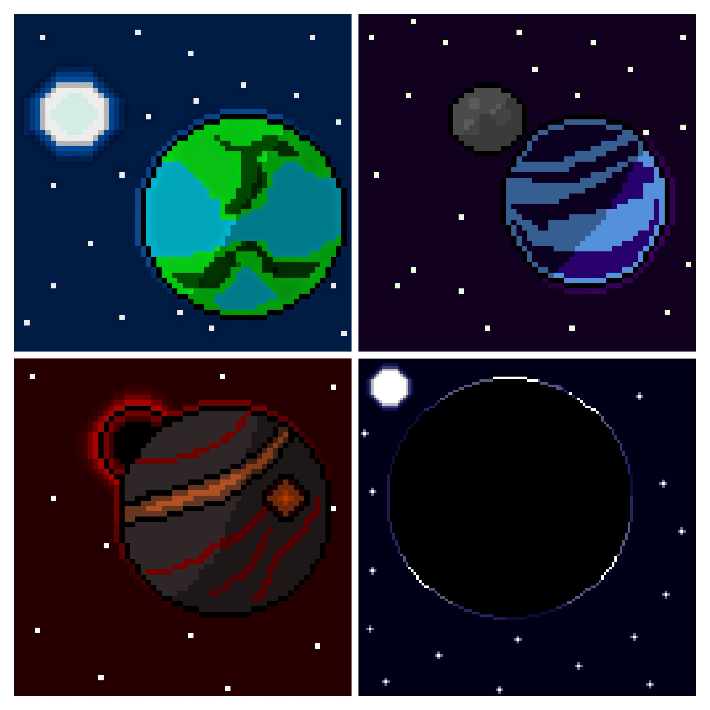
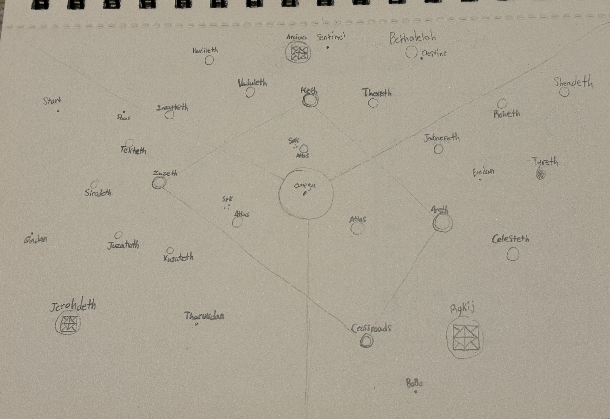

This one is my personal pride and joy. A project I've been working on for years. Since my Junior year of highschool in fact. The original story idea was something very similar to Ender's Game which is one of my favorite sci fi books. There's a reason I took so much inspiration from it at first. However, now that it's almost been 6 years since then this entire world is unrecognizable from its origins.
 For a really quick synopsis. You play as a lone traveler in a vast galaxy with no memory or experience in it. A complete blank slate. You're sent on a mission by the Galactic Government because of things that happened before you were created. You're a clone of a race of aliens that was thought to be wiped out and the alien that created the cloning pod thought to be dead. The government wants him dead but they mask it as a grand quest for you to embark on. So as you venture the galaxy you learn all about this history, meet people and make friends.
The story is meant to handle themes of self, responsibility and morality, and unification. I'm proud to say that it's a much bigger story than just following the character you play as. What truly will make this story more interesting is following the stories of those all across the galaxies and their hopes and dreams. While I'm still fleshing out all of these I have 30 worlds I want the player to explore each with their own stories and people to meet.
Of all of the projects I've talked about this is one that I'm not only the most excited to finish, but excited to work on in general. It truly is the reason I want to become a software engineer and pursue this field and knowledge.